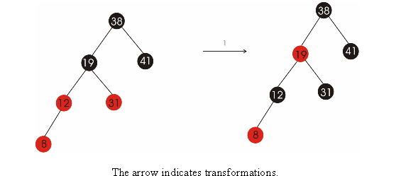
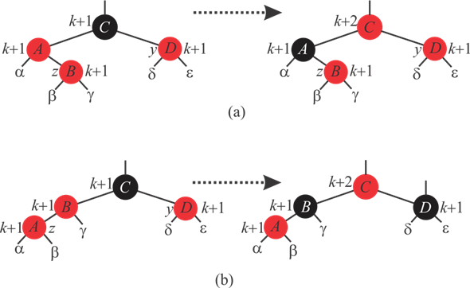
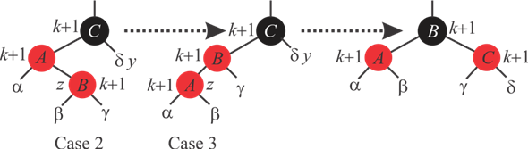

Red Black Tree:
A binary search tree can be called as a red black tree when it satisfies following properties:
1. Each node of tree must be either red or black in color.
2. The root of tree must be black.
3. The color of every leaf must be black.
4. When parent node color is red, then color of its both children must be black.
5. The number of black node from any node to leave must be same.
Consider the Algorithm RB-INSERT() to insert a new node in Red-Black tree. Whenever a new node is inserted into a Red-Black tree, in line 16 of RB-INSERT(), the color of the new node is set to red so that the inserting a new node does not make any effect on black-height of Red-Black tree. That is , the property 4 is not violated.
If the newly inserted node z’s color is set to black, it may violate the 5th red-black property. That is, the black height of the tree is affected.
Hence, the color of the newly inserted node is always chosen to set to red in line 16 of RB-INSERT.

Red Black Tree:
A binary search tree is called as a red black tree, if it satisfies the following properties:
1. Each node of tree must be either red or black in color.
2. The root of tree must be black.
3. The color of every leaf must be black.
4. When parent node color is red, then color of its both children must be black.
5. In a simple path, the number of black node from any node to leave must be same.
It is given that the black heights of sub-trees ,
, ,
, ,
, and
and
 is
k in 13.5 and 13.6.
is
k in 13.5 and 13.6.
Consider the following figure 13.5 to label with black heights. After labeling each node in the tree with black heights, the figure 13.5 is as follows:

• The black height of,,,and
sub-tree
is k in both figures (a) and (b). Therefore the black height
of nodes A, B and D is k+1. The black
height of red black tree is counted from leaves to the root.
• The black height of node C in left tree, in both figures (a) and (b), is k+1 because of k+1 black height of its red children.
• The black height of node C in right tree, in both figures (a) and (b), is k+2 because of k+1 black height of its black children.
It is observed that in both figures (a) and (b), before fixing the tree and after fixing the tree, the black height of the tree is balanced. That is, even after the tree transformation, the 5th property of Red-Black tree is preserved.
Consider the following figure 13.6 to label with black heights. After labeling each node in the tree with black heights, the figure 13.6 is as follows:

• The black height of,,, and
sub-tree
is k. therefore the black height of nodes A, B
and C is k+1.
Here also it is observed that before fixing the tree and after fixing the tree, black height of the tree is balanced. That is, even after the tree transformation, the 5 th property of Red-Black tree is preserved.
RB-INSERT-FIXUP algorithm
Professor Teach said that in the algorithm of RB-INSERT-FIXUP if the color of terminal node which is the child of node z is set to red then the loop in first line of algorithm will not terminate. And insertion of a node z in the RB-Tree is inserted as the root of the tree.
Refer the page number 316 from textbook for RB-INSERT-FIXUP algorithm.
With the help of argument that in RB-INSERT-FIXUP algorithmis never set to red, proving that professor’s concern is baseless.
Red Black Tree is a special type of tree in which each node contains an extra bit for the storage of the color of that node. So each node of Red Black Tree contains five fields p for parent, left for left child, right for right child, key for data value and color for color of the node.
In the RB-INSERT-FIXUP algorithm the colors are set red only in two cases, in case 1 and case 3, the parent of the parent of z that iscolored red.
1. If is the sentinel, then is the root and ifis root then its color will be black and the loop in line 1 of algorithm will terminate.
2. The only subtlety is in case 2, where,
3. Setbefore coloringred, as we rotate before the again coloring, the identity of is the same before and after case 2, so RB-INSERT-FIXUP doesn’t sets to red ever.
Hence professor’s consideration that “in the algorithm of RB-INSERT-FIXUP if the color of terminal node which is the child of node z is set to red then the loop in first line of algorithm will not terminate” is baseless.
Consider the following three possible cases of inserting a node into a Red-Black tree using RB-INSERT:
1. An Empty Red-Black tree (does not have any node).
2. Red-black tree with only black nodes (, where n is the number of nodes)
3. Red-black tree with some black and red nodes.
• Consider inserting a node into an empty red-black tree:
If a node is inserted into empty red-black tree using RB-INSERT, then the inserted node becomes the root and since the tree contains only one black node. But it does not satisfy the condition, where n is the number of nodes.
Now, if another node is inserted into the tree, then the RB-INSERT assigns red-color to the second node to balance the black-height. Therefore, if n=2, the red-black tree contains at least one red node.
• Consider inserting a node into a red-black tree with all black-nodes:
If a new node is inserted into a red-black node with all black nodes using the RB-INSERT function, the new node is assigned red color and The last line of RB-INSERT function calls the RB-INSERT-FIXUP().
The first line of RB-INSERT-FIXUP() checks whether the parent of newly inserted node is red or not. Since the given tree has only black nodes, newly inserted node remains red in color.
Therefore, in this case also the tree contains at least one red node.
• Consider inserting a node into a red-black tree with some black and red nodes:
Since, the red-black tree have both red and black node, it is already satisfying the condition that if then at-least one node is red. Even though a new node is inserted into this tree and RB-INSERT-FIXUP makes changes, the tree contains at least one red node.
Hence, it is true that a Red-Black tree has at-least one red node when number of nodes in the red-black tree is greater than 1.